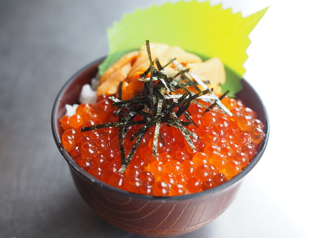
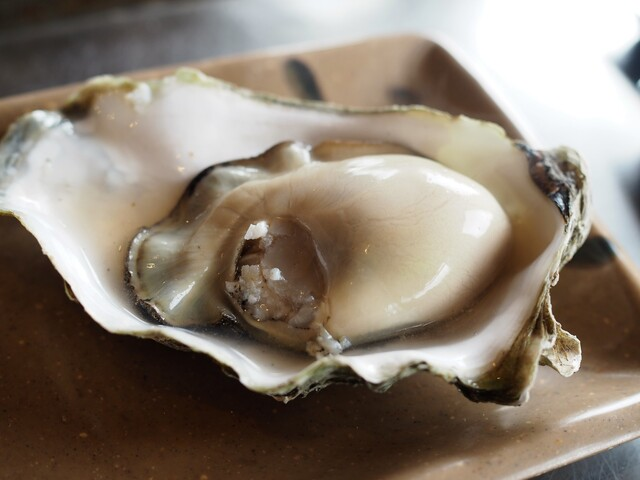
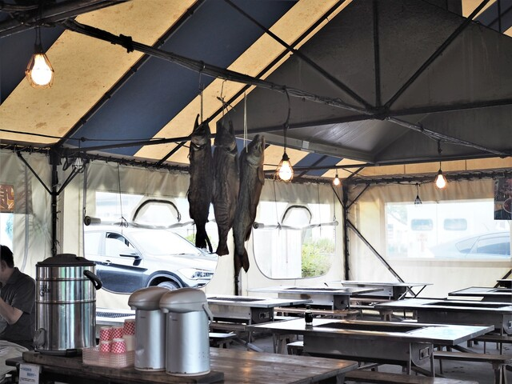

Photo Gallery
鮭番屋とは
北海道釧路市浜町4番11号に位置する海産物工場の直売所兼炉端焼き食堂（TEL 0154-25-0503）。マルア阿部商店が直営しており、鮭・ホタテ・ホッケなど自分で選んだ新鮮な魚介をテント内の炭火炉で焼いて食べるスタイルが評判です。バナナマンのせっかくグルメや多数メディアで紹介された人気店。
実食レビュー
釧路旅行で「朝から炉端焼き」を体験できる貴重なスポット。直売所で食べたい魚を自分で選んで購入し、テント内のテーブルに移動すると、店員さんが炭火で丁寧に焼いてくれます。サーモンハラスの皮がパリッと焼けた瞬間の香りは格別。こぼれんばかりのいくら丼も必食です。
おすすめメニュー
- サーモンハラス炭火焼き ¥400〜 — 脂がしつこくなく皮がパリパリ
- いくら丼 ¥2,000前後 — 直営ならではのこぼれいくら
- 銀だらカマ炭火焼き — 脂たっぷり、まろやかな旨み
- ホタテ貝焼き — 肉厚な野付産が中心
- 干したてししゃも — 釧路沿岸産の本物ししゃも
📎 公式Webサイト
現在、独立した公式Webサイトは確認できていません。最新情報はお電話または各グルメサイトでご確認ください。
アクセス・予約
訪問のコツ
- 強風時はテント臨時休業あり——事前電話確認を推奨
- 朝7:30開店直後が鮮度最高・並ばずに入れる
- 駐車場20台完備で車でのアクセスが便利
- クレジットカード（JCB・VISA・Master）利用可